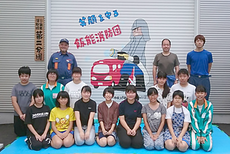
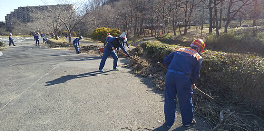
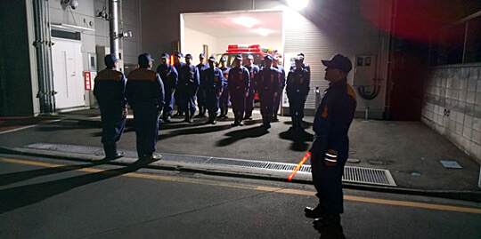
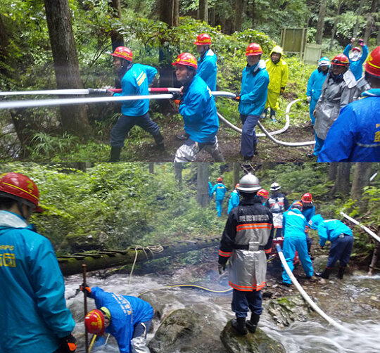
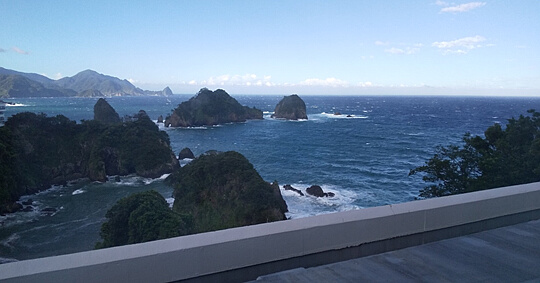
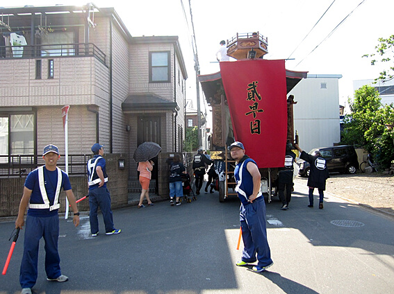
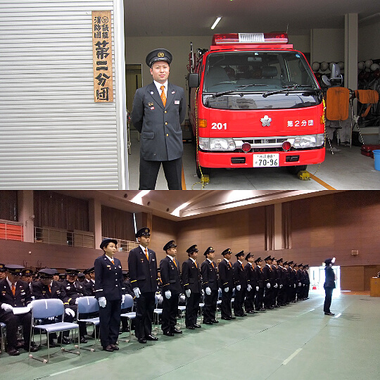

第2分団
|  | 第二分団は、一丁目、二丁目、柳原地区といった駅周辺区域を担当し、大野法男分団長を中心とした総員２３名＋積載車１台で活動しています。 毎年行われる分団研修旅行や何かに付けて行う慰労会の他、家族慰安のバーベキュー等もあり、消防活動以外でも交流が多く、＠ホーム的な分団です。団員の団結力は高く、ここぞという時は力を発揮する、言わば“現場に強い分団”であり、実際の災害現場では、迅速かつ適確な対応で『市民の生命と財産を守る！』という消防団に課せられた任務を遂行し、地域の皆様方が安心して生活できるよう日々努力しております！ |
令和2年度トピックス
令和元年度トピックス
◆2020年2月23日(日) 台風被害清掃阿須運動公園にて昨年の台風19号における被害がまだある阿須運動公園で飯能消防団の全員で片付け作業を行いました天気が良く作業を行うにはやりやすい気候でしたが被害の甚大さには驚くばかりでした。

◆令和元年12月25日～31日 歳末特別警戒
年末恒例の特別警戒が2分団区域で行われました。28日（土）の全員出動の日には自治会長様や後援会の方々も出席してもらい、車両点検が行われました。寒い中お疲れ様でした。

◆令和1年7月7日(日) 2,4,11分団合同中継放水訓練 名栗にて
梅雨空の雨の中、合同の放水訓練が名栗の山の中伏にて7時～12時の予定で行われました。2分団は水利を任され、吸管の投入、もやい結び、ポンプの使い方等各団員学ぶことが多いと思いますが、2分団に限っては支障もなく順調に訓練ができたことを皆さんに感謝申し上げます。お疲れ様でした。

◆令和1年6月15～16日（土日） 飯能消防団団幹部研修旅行
2年に1度の団幹部研修旅行が行われ、2分団からは荒木分団長、丹羽副分団長、石田本部部長、新井一部部長が参加することとなり、立川防災館～伊豆方面へ行ってきました。一日目は大雨の天候になり到着時刻の遅れがありましたが、二日目は快晴となり移動もスムーズに進み他分団の方々とも親睦を深めることができる良い機会となりました。

◆令和1年5月25日(土) 飯能新緑ツーデーマーチ警備
五月晴れの暑い中、子ども図書館入り口交差点付近を2分団が警備することになりました。大変な暑さが予想されたので道路の端にテントの設置をさせて頂きました。今年は令和元年の記念に2丁目大山車が街中を練り歩くので運行の警備もすることになりました。

◆2019年4月14日（日）平成31年度飯能消防団入団式
今年は2分団には1名の新入団員が加わりました。山崎畳店の山崎貞行君です。
